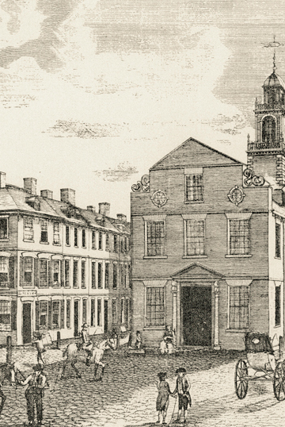

<!DOCTYPE html PUBLIC "-//W3C//DTD XHTML 1.0 Transitional//EN"
"http://www.w3.org/TR/xhtml1/DTD/xhtml1-transitional.dtd">
<html xmlns="http://www.w3.org/1999/xhtml">
<head>
	<title>Boston College - Poe's Life</title>
	<meta http-equiv="Content-Type" content="text/html; charset=iso-8859-1" />
	<link href="wideScreen.css" rel="stylesheet" type="text/css" />
	<!--[if IE 5]>
		<link href="wideScreenIEhack.css" rel="stylesheet" type="text/css" />
	<![endif]-->
	<!--[if IE 5.5000]>
		<link href="wideScreenIEhack.css" rel="stylesheet" type="text/css" />
	<![endif]-->
	
	<script type="text/javascript">
<!--
function popup(url) 
{
 var width  = 1000;
 var height = 650;
 var left   = (screen.width  - width)/2;
 var top    = (screen.height - height)/2;
 var params = 'width='+width+', height='+height;
 params += ', top='+top+', left='+left;
 params += ', directories=no';
 params += ', location=no';
 params += ', menubar=no';
 params += ', resizable=no';
 params += ', scrollbars=no';
 params += ', status=no';
 params += ', toolbar=no';
 newwin=window.open(url,'Boston College - Poe&rsquo;s Life', params);
 if (window.focus) {newwin.focus()}
 return false;
}
// -->
</script>

</head>
<body>
<div id="wrapper">
	<div id="header">
			<div id="BCLogo"><a
				href="/index.html"></div>
			<div id="SchoolLogo"></div>
	</div>
	<div id="content">
		<div id="left"><a href="javascript: void(0)" onclick="popup('6large.jpg')"></a></div>
		<div id="right">

			<div id="caption"><h1>Poe's Life in Boston</h1>
				<p id="text"><strong>STARK'S ANTIQUE VIEWS OF YE TOWNE OF BOSTON</strong><br/>"A View of the Old State House"<br/>Engraving, 1793</p>
				<p id="text">In the block of buildings on the left, the second door down from the corner facing the side of the Old State House was the entrance to 14 State Street where Elizabeth Arnold and daughter Eliza lived in an auctioneering and rooming house operated by Mr. & Mrs. William Baylis in 1796. <br/><br/>

In 1827, long after Eliza Poe had died, her second Boston-born son, 18-year old Edgar Allan Poe, would return to Boston and publish his first book, <em>Tamerlane and Other Poems</em>, in the corner building shown to the right of the State House, then 70 Washington Street, in the office of a young printer named Calvin F. S. Thomas. Long Wharf is at the end of State Street in the distance.</p>

				<p id="text">Courtesy of Historic New England</p>				
			</div>
			<div id="controls">
				<div id="page">6 of 63</div>
				<div><a href="5.html" id="previous"></a></div>
				<div><a href="7.html" id="next"></a></div>
			</div>

		</div>
			<span style="margin-left: 140px; color: #444444; font-family (stack): georgia,verdana,arial; font-size: 13px;">click image to enlarge</span>
	</div>
	<div id="footer">
		&nbsp;
	</div>
</div>
</body>
</html>
